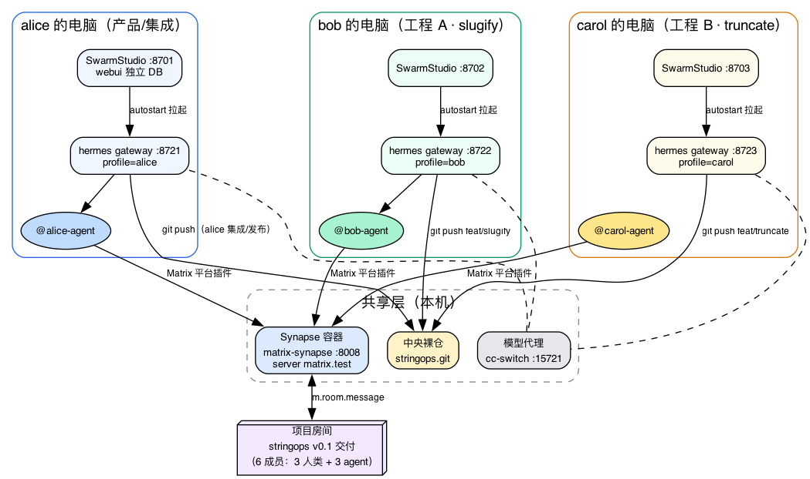
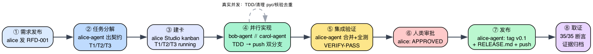
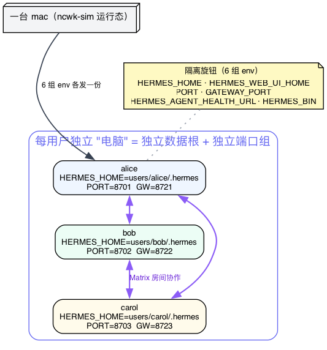

日期：2026-09-17 范围：ncwk-sim（本机 3 用户 × SwarmStudio + hermes 集群） 结论：通过，验收门 35/35
在一台 mac 上模拟了 3 名成员（alice / bob / carol）各自部署 hermes agent 集群 + SwarmStudio，经本机 Synapse 协作完成了 stringops v0.1 的真实交付全流程（需求 → 分解 → 并行实现 → 集成验证 → 审批 → 发布）。35 项验收断言全部通过，零失败。 所有 agent 动作均为真实 gateway + LLM 回合，导演脚本只扮演人类打字与审批。
| 层 | 配置 | 实例 |
|---|---|---|
| Matrix 服务 | synapse 容器 matrix-synapse，:8008，server
matrix.test |
共享 1 个 |
| Studio 后端 | 生产构建 dist/server/index.js，端口 8701-8703 |
每用户 1 个 |
| Gateway | hermes v0.21.3 + mautrix 0.21.1，api_server 8721-8723 | 每用户 1 个 |
| Agent 集群 | 每用户 profile <u>，Matrix 平台插件接入 |
3 个 |
| 模型 | custom:cc-switch 本地代理（127.0.0.1:15721） | 共享 |
隔离方式（模拟”独立电脑”）：HERMES_HOME /
HERMES_WEB_UI_HOME / PORT /
GATEWAY_PORT / HERMES_AGENT_HEALTH_URL /
HERMES_BIN 六组环境变量，数据目录互不交叉。
部署拓扑 —— 三台”电脑”如何在一台 mac 上互不干扰又彼此协作：

协作时序 —— 需求从发布到交付的八步流转，④步是真实并行：

隔离机制 —— 为什么不需要虚拟机：

导演脚本（sim-scenario.sh）按八步剧本驱动，全部等待采用地面真值轮询（直接查中央仓的分支/文件/tag），消息流仅作信号；agent
触发的人机交互（!approve / clarify /
/retry）由导演以对应人类身份线程内回复处理。
| 维度 | 断言数 | 结果 |
|---|---|---|
| Studio 实例健康 + 数据隔离 | 6 | ✅ |
| Gateway 集群 + 房间成员 + agent 在线 | 9 | ✅ |
| 房间协作轨迹（7 个关键消息标志） | 7 | ✅ |
| 代码交付（tag v0.1 / 双分支 / 复跑 pytest / RELEASE.md） | 5 | ✅ |
| Kanban 三卡终态 done | 3 | ✅ |
| 证据文件完整 | 5 | ✅ |
| 指标 | 数值 |
|---|---|
| 房间消息总数 | 169 条（agent 146 / 人类 23） |
| 交付耗时 | 首轮约 70 分钟（13:15 需求发布 → 14:05 发布完成） |
| 测试 | 14 passed（slugify 7 + truncate 6 + smoke 1），导演独立复跑一致 |
| 中央仓 | 3 分支（main + feat/slugify + feat/truncate）、tag v0.1、6 个提交 |
| 交付物 | stringops/slugify.py（27 行）+
truncate.py（13 行）+ RELEASE.md |
| 资源占用 | 每实例 Studio ≈ 60-84 MB RSS，gateway ≈ 56-61 MB RSS |
| 证据包 | 144 KB，19 个文件（消息/git 图谱/kanban/各阶段回复/pytest 输出） |
__pycache__/*.pyc 违反任务约束，主动向人类请求 force-push
清理历史，获准后清理并复跑测试再报完成。/retry
恢复。串行化或提高代理并发可消除。cd overlay && git checkout main
bash scripts/sim/sim-setup.sh # 幂等准备（账号/房间/目录/中央仓）
bash scripts/sim/sim-up.sh # 拉起 3 实例
bash scripts/sim/sim-scenario.sh # 全流程（支持 START_STEP= 断点续跑）
bash scripts/sim/sim-evidence.sh # 取证 + 35 项验收门
bash scripts/sim/sim-down.sh # 全停浏览器入口：http://127.0.0.1:8701（alice）/
8702（bob）/
8703（carol），admin/123456。证据目录
/Volumes/nvme2230/lab/ncwk-sim/evidence/。
/Volumes/nvme2230/lab/ncwk-sim/。SimPass_<name>_2026）与 1 个临时管理员
simcleanup；两个旧探针账号已注销。